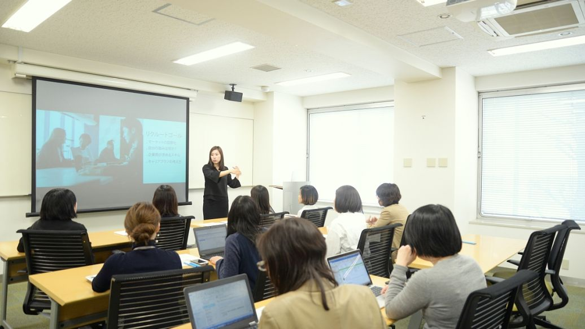

师资力量
学校大力实施人才强校战略，师资队伍结构不断改善。现有在职教职工2618人，其中师资1802人，师资中有教授310人、副教授647人，有545人具有博士学位、965人具有硕士学位。学校师资队伍中有国家“万人计划”哲学社会科学领军人才人选1人、国家级中青年有突出贡献专家1人、新世纪百千万人才工程国家级人选1人、中宣部文化名家暨“四个一批”人才人选1人、教育部新世纪优秀人才支持计划人选4人、国家级“教学名师”1人、全国模范教师2人、全国优秀教师11人、全国杰出专业技术人才1人、全国五一劳动奖章获得者 4人，全国师德标兵1人，全国优秀科技工作者2人、全国高校思想政治理论课优秀教师2人，教育部专业指导委员会委员5人、享受国务院特殊津贴专家31人、享受省政府特殊津贴专家17人、贵州省核心专家3人、省管专家27人、省高校哲学社会科学“黔灵学者”6人、省优秀青年科技人才18人、省青年创新人才奖3人、省青年科技奖12人、省高层次创新人才18人（千层次人才13人、百层次人才5人）、省高校哲学社会科学学术带头人26人、省高等学校“教学名师”17人、省高校思想政治理论课教学名师5人、省首届哲学社会科学学术创新人才奖6人。现有国家级教学团队1个、“全国高校黄大年式教师团队”1个，省级教学团队5个。师资队伍中有“候鸟型”特聘教授23人(其中院士3人、“长江学者”2人、国家万人计划领军人才2人、国家中青年科技创新领军人才1人、国家杰出青年基金获得者1人)。